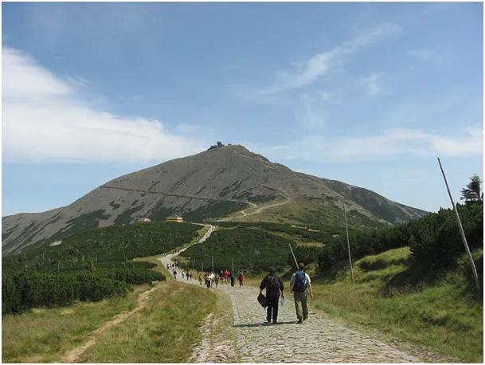
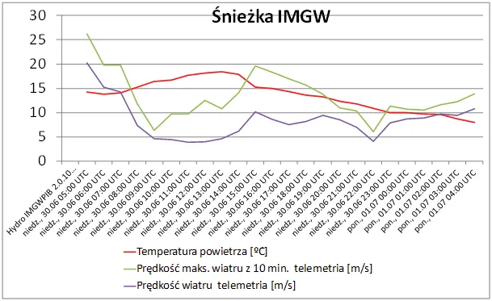
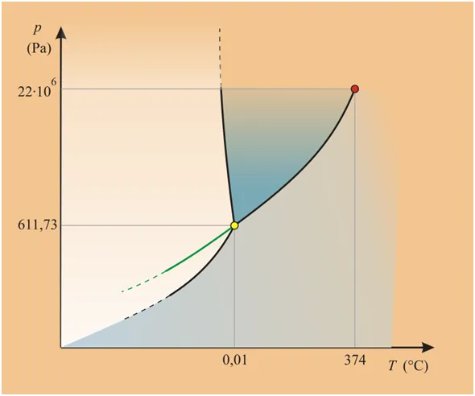
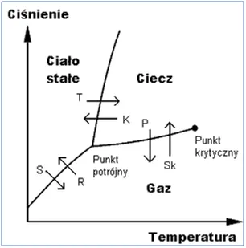

Lód wrze, gaz zamarza, ciecz paruje, cuda !
Ciśnienie, temperatura, wilgotność. Te trzy cechy powietrza decydują o "pogodzie". Im wyżej się wspinamy w górach, tym ciśnienie i temperatura spadają a wilgotność względna, czyli zdolność powietrza do utrzymywania wody w stanie gazowym, maleje. Na pewnej wysokości, gdy np. nocą brak jest energii cieplnej do utrzymania wody w stanie gazowym, cząsteczki pary zaczynają się łączyć w kropelki tworząc najpierw białe chmury a potem krople na tyle duże, że te pod wpływem grawitacji spadają w postaci deszczu lub śniegu.

Śnieżka to najwyższy szczyt Karkonoszy oraz Sudetów ze szczytem 1603 m n.p.m. Mamy tam stację obserwacji meteorologicznych, gdzie możemy badać stan atmosfery bez lokalnych fenomenów jak to ma miejsce w dolinach.

Kto wybiera się w góry od dziś musi zabrać ciepłą odzież, bo temperatury w górach są już znacznie poniżej 10 st. C a wiatr nabiera mocny. Woda jest kluczowa dla wszystkich przemian w atmosferze.
Fenomen tej substancji nie został ciągle zbadany dogłębnie. Z mniej znanych parametrów jest "punkt potrójny" wody. W temperaturze 0,01 °C (273,16 K) i ciśnieniu 611,73 Pa substancja ta występuje jednocześnie jako gaz, ciecz i ciało stałe. Znamy powszechnie punkty podwójne, gdy woda jest zarazem lodem i cieczą (zamarzanie topnienie) lub cieczą i parą (wrzenie).


W punkcie potrójnym dzieją się wszystkie te przemiany jednocześnie. Lód wrze, gaz zamarza, ciecz paruje, cuda ! W kombinacji ciśnień i temperatur z lewej dolnej części wykresu woda nie występuje w stanie ciekłym, tylko z postaci lodu od razy przechodzi do stanu gazowego, sublimuje ale nie topnieje. Serio!
Paweł Klimczewski